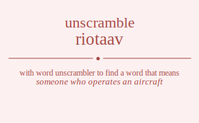

The word found after unscrambling riotaav means that someone who operates an aircraft, .
Wordscapes Daily Puzzle Answers for 06/05/2019
air , art , oar , rat , rot , tar , via , oat , vat , riot , trio , iota , ratio , aorta , aviator

The word found after unscrambling riotaav means that someone who operates an aircraft, .
Wordscapes Daily Puzzle Answers for 06/05/2019
air , art , oar , rat , rot , tar , via , oat , vat , riot , trio , iota , ratio , aorta , aviator
You can also find solutions for different combinations of letters in riotaav like riotaav riotava riotaav riotava riotvaa riotvaa rioatav rioatva rioaatv rioaavt rioavta rioavat rioatav rioatva rioaatv rioaavt rioavta rioavat riovtaa riovtaa riovata riovaat riovata riovaat ritoaav ritoava ritoaav ritoava ritovaa ritovaa ritaoav ritaova ritaaov ritaavo ritavoa ritavao ritaoav ritaova ritaaov ritaavo ritavoa ritavao ritvoaa ritvoaa ritvaoa ritvaao ritvaoa ritvaao riaotav riaotva riaoatv riaoavt riaovta riaovat riatoav riatova riataov riatavo riatvoa riatvao riaaotv riaaovt riaatov riaatvo riaavot riaavto riavota riavoat riavtoa riavtao riavaot riavato riaotav riaotva riaoatv riaoavt riaovta riaovat riatoav riatova riataov riatavo riatvoa riatvao riaaotv riaaovt riaatov riaatvo riaavot riaavto riavota riavoat riavtoa riavtao riavaot riavato rivotaa rivotaa rivoata rivoaat rivoata rivoaat rivtoaa rivtoaa rivtaoa rivtaao rivtaoa rivtaao rivaota rivaoat rivatoa rivatao rivaaot rivaato rivaota rivaoat rivatoa rivatao rivaaot rivaato roitaav roitava roitaav roitava roitvaa roitvaa roiatav roiatva roiaatv roiaavt roiavta roiavat roiatav roiatva roiaatv roiaavt roiavta roiavat roivtaa roivtaa roivata roivaat roivata roivaat rotiaav rotiava rotiaav rotiava rotivaa rotivaa rotaiav rotaiva rotaaiv rotaavi rotavia rotavai rotaiav rotaiva rotaaiv rotaavi rotavia rotavai rotviaa rotviaa rotvaia rotvaai rotvaia rotvaai roaitav roaitva roaiatv roaiavt roaivta roaivat roatiav roativa roataiv roatavi roatvia roatvai roaaitv roaaivt roaativ roaatvi roaavit roaavti roavita roaviat roavtia roavtai roavait roavati roaitav roaitva roaiatv roaiavt roaivta roaivat roatiav roativa roataiv roatavi roatvia roatvai roaaitv roaaivt roaativ roaatvi roaavit roaavti roavita roaviat roavtia roavtai roavait roavati rovitaa rovitaa roviata roviaat roviata roviaat rovtiaa rovtiaa rovtaia rovtaai rovtaia rovtaai rovaita rovaiat rovatia rovatai rovaait rovaati rovaita rovaiat rovatia rovatai rovaait rovaati rtioaav rtioava rtioaav rtioava rtiovaa rtiovaa rtiaoav rtiaova rtiaaov rtiaavo rtiavoa rtiavao rtiaoav rtiaova rtiaaov rtiaavo rtiavoa rtiavao rtivoaa rtivoaa rtivaoa rtivaao rtivaoa rtivaao rtoiaav rtoiava rtoiaav rtoiava rtoivaa rtoivaa rtoaiav rtoaiva rtoaaiv rtoaavi rtoavia rtoavai rtoaiav rtoaiva rtoaaiv rtoaavi rtoavia rtoavai rtoviaa rtoviaa rtovaia rtovaai rtovaia rtovaai rtaioav rtaiova rtaiaov rtaiavo rtaivoa rtaivao rtaoiav rtaoiva rtaoaiv rtaoavi rtaovia rtaovai rtaaiov rtaaivo rtaaoiv rtaaovi rtaavio rtaavoi rtavioa rtaviao rtavoia rtavoai rtavaio rtavaoi rtaioav rtaiova rtaiaov rtaiavo rtaivoa rtaivao rtaoiav rtaoiva rtaoaiv rtaoavi rtaovia rtaovai rtaaiov rtaaivo rtaaoiv rtaaovi rtaavio rtaavoi rtavioa rtaviao rtavoia rtavoai rtavaio rtavaoi rtvioaa rtvioaa rtviaoa rtviaao rtviaoa rtviaao rtvoiaa rtvoiaa rtvoaia rtvoaai rtvoaia rtvoaai rtvaioa rtvaiao rtvaoia rtvaoai rtvaaio rtvaaoi rtvaioa rtvaiao rtvaoia rtvaoai rtvaaio rtvaaoi raiotav raiotva raioatv raioavt raiovta raiovat raitoav raitova raitaov raitavo raitvoa raitvao raiaotv raiaovt raiatov raiatvo raiavot raiavto raivota raivoat raivtoa raivtao raivaot raivato raoitav raoitva raoiatv raoiavt raoivta raoivat raotiav raotiva raotaiv raotavi raotvia raotvai raoaitv raoaivt raoativ raoatvi raoavit raoavti raovita raoviat raovtia raovtai raovait raovati ratioav ratiova ratiaov ratiavo rativoa rativao ratoiav ratoiva ratoaiv ratoavi ratovia ratovai rataiov rataivo rataoiv rataovi ratavio ratavoi ratvioa ratviao ratvoia ratvoai ratvaio ratvaoi raaiotv raaiovt raaitov raaitvo raaivot raaivto raaoitv raaoivt raaotiv raaotvi raaovit raaovti raatiov raativo raatoiv raatovi raatvio raatvoi raaviot raavito raavoit raavoti raavtio raavtoi raviota ravioat ravitoa ravitao raviaot raviato ravoita ravoiat ravotia ravotai ravoait ravoati ravtioa ravtiao ravtoia ravtoai ravtaio ravtaoi ravaiot ravaito ravaoit ravaoti ravatio ravatoi raiotav raiotva raioatv raioavt raiovta raiovat raitoav raitova raitaov raitavo raitvoa raitvao raiaotv raiaovt raiatov raiatvo raiavot raiavto raivota raivoat raivtoa raivtao raivaot raivato raoitav raoitva raoiatv raoiavt raoivta raoivat raotiav raotiva raotaiv raotavi raotvia raotvai raoaitv raoaivt raoativ raoatvi raoavit raoavti raovita raoviat raovtia raovtai raovait raovati ratioav ratiova ratiaov ratiavo rativoa rativao ratoiav ratoiva ratoaiv ratoavi ratovia ratovai rataiov rataivo rataoiv rataovi ratavio ratavoi ratvioa ratviao ratvoia ratvoai ratvaio ratvaoi raaiotv raaiovt raaitov raaitvo raaivot raaivto raaoitv raaoivt raaotiv raaotvi raaovit raaovti raatiov raativo raatoiv raatovi raatvio raatvoi raaviot raavito raavoit raavoti raavtio raavtoi raviota ravioat ravitoa ravitao raviaot raviato ravoita ravoiat ravotia ravotai ravoait ravoati ravtioa ravtiao ravtoia ravtoai ravtaio ravtaoi ravaiot ravaito ravaoit ravaoti ravatio ravatoi rviotaa rviotaa rvioata rvioaat rvioata rvioaat rvitoaa rvitoaa rvitaoa rvitaao rvitaoa rvitaao rviaota rviaoat rviatoa rviatao rviaaot rviaato rviaota rviaoat rviatoa rviatao rviaaot rviaato rvoitaa rvoitaa rvoiata rvoiaat rvoiata rvoiaat rvotiaa rvotiaa rvotaia rvotaai rvotaia rvotaai rvoaita rvoaiat rvoatia rvoatai rvoaait rvoaati rvoaita rvoaiat rvoatia rvoatai rvoaait rvoaati rvtioaa rvtioaa rvtiaoa rvtiaao rvtiaoa rvtiaao rvtoiaa rvtoiaa rvtoaia rvtoaai rvtoaia rvtoaai rvtaioa rvtaiao rvtaoia rvtaoai rvtaaio rvtaaoi rvtaioa rvtaiao rvtaoia rvtaoai rvtaaio rvtaaoi rvaiota rvaioat rvaitoa rvaitao rvaiaot rvaiato rvaoita rvaoiat rvaotia rvaotai rvaoait rvaoati rvatioa rvatiao rvatoia rvatoai rvataio rvataoi rvaaiot rvaaito rvaaoit rvaaoti rvaatio rvaatoi rvaiota rvaioat rvaitoa rvaitao rvaiaot rvaiato rvaoita rvaoiat rvaotia rvaotai rvaoait rvaoati rvatioa rvatiao rvatoia rvatoai rvataio rvataoi rvaaiot rvaaito rvaaoit rvaaoti rvaatio rvaatoi irotaav irotava irotaav irotava irotvaa irotvaa iroatav iroatva iroaatv iroaavt iroavta iroavat iroatav iroatva iroaatv iroaavt iroavta iroavat irovtaa irovtaa irovata irovaat irovata irovaat irtoaav irtoava irtoaav irtoava irtovaa irtovaa irtaoav irtaova irtaaov irtaavo irtavoa irtavao irtaoav irtaova irtaaov irtaavo irtavoa irtavao irtvoaa irtvoaa irtvaoa irtvaao irtvaoa irtvaao iraotav iraotva iraoatv iraoavt iraovta iraovat iratoav iratova irataov iratavo iratvoa iratvao iraaotv iraaovt iraatov iraatvo iraavot iraavto iravota iravoat iravtoa iravtao iravaot iravato iraotav iraotva iraoatv iraoavt iraovta iraovat iratoav iratova irataov iratavo iratvoa iratvao iraaotv iraaovt iraatov iraatvo iraavot iraavto iravota iravoat iravtoa iravtao iravaot iravato irvotaa irvotaa irvoata irvoaat irvoata irvoaat irvtoaa irvtoaa irvtaoa irvtaao irvtaoa irvtaao irvaota irvaoat irvatoa irvatao irvaaot irvaato irvaota irvaoat irvatoa irvatao irvaaot irvaato iortaav iortava iortaav iortava iortvaa iortvaa ioratav ioratva ioraatv ioraavt ioravta ioravat ioratav ioratva ioraatv ioraavt ioravta ioravat iorvtaa iorvtaa iorvata iorvaat iorvata iorvaat iotraav iotrava iotraav iotrava iotrvaa iotrvaa iotarav iotarva iotaarv iotaavr iotavra iotavar iotarav iotarva iotaarv iotaavr iotavra iotavar iotvraa iotvraa iotvara iotvaar iotvara iotvaar ioartav ioartva ioaratv ioaravt ioarvta ioarvat ioatrav ioatrva ioatarv ioatavr ioatvra ioatvar ioaartv ioaarvt ioaatrv ioaatvr ioaavrt ioaavtr ioavrta ioavrat ioavtra ioavtar ioavart ioavatr ioartav ioartva ioaratv ioaravt ioarvta ioarvat ioatrav ioatrva ioatarv ioatavr ioatvra ioatvar ioaartv ioaarvt ioaatrv ioaatvr ioaavrt ioaavtr ioavrta ioavrat ioavtra ioavtar ioavart ioavatr iovrtaa iovrtaa iovrata iovraat iovrata iovraat iovtraa iovtraa iovtara iovtaar iovtara iovtaar iovarta iovarat iovatra iovatar iovaart iovaatr iovarta iovarat iovatra iovatar iovaart iovaatr itroaav itroava itroaav itroava itrovaa itrovaa itraoav itraova itraaov itraavo itravoa itravao itraoav itraova itraaov itraavo itravoa itravao itrvoaa itrvoaa itrvaoa itrvaao itrvaoa itrvaao itoraav itorava itoraav itorava itorvaa itorvaa itoarav itoarva itoaarv itoaavr itoavra itoavar itoarav itoarva itoaarv itoaavr itoavra itoavar itovraa itovraa itovara itovaar itovara itovaar itaroav itarova itaraov itaravo itarvoa itarvao itaorav itaorva itaoarv itaoavr itaovra itaovar itaarov itaarvo itaaorv itaaovr itaavro itaavor itavroa itavrao itavora itavoar itavaro itavaor itaroav itarova itaraov itaravo itarvoa itarvao itaorav itaorva itaoarv itaoavr itaovra itaovar itaarov itaarvo itaaorv itaaovr itaavro itaavor itavroa itavrao itavora itavoar itavaro itavaor itvroaa itvroaa itvraoa itvraao itvraoa itvraao itvoraa itvoraa itvoara itvoaar itvoara itvoaar itvaroa itvarao itvaora itvaoar itvaaro itvaaor itvaroa itvarao itvaora itvaoar itvaaro itvaaor iarotav iarotva iaroatv iaroavt iarovta iarovat iartoav iartova iartaov iartavo iartvoa iartvao iaraotv iaraovt iaratov iaratvo iaravot iaravto iarvota iarvoat iarvtoa iarvtao iarvaot iarvato iaortav iaortva iaoratv iaoravt iaorvta iaorvat iaotrav iaotrva iaotarv iaotavr iaotvra iaotvar iaoartv iaoarvt iaoatrv iaoatvr iaoavrt iaoavtr iaovrta iaovrat iaovtra iaovtar iaovart iaovatr iatroav iatrova iatraov iatravo iatrvoa iatrvao iatorav iatorva iatoarv iatoavr iatovra iatovar iatarov iatarvo iataorv iataovr iatavro iatavor iatvroa iatvrao iatvora iatvoar iatvaro iatvaor iaarotv iaarovt iaartov iaartvo iaarvot iaarvto iaaortv iaaorvt iaaotrv iaaotvr iaaovrt iaaovtr iaatrov iaatrvo iaatorv iaatovr iaatvro iaatvor iaavrot iaavrto iaavort iaavotr iaavtro iaavtor iavrota iavroat iavrtoa iavrtao iavraot iavrato iavorta iavorat iavotra iavotar iavoart iavoatr iavtroa iavtrao iavtora iavtoar iavtaro iavtaor iavarot iavarto iavaort iavaotr iavatro iavator iarotav iarotva iaroatv iaroavt iarovta iarovat iartoav iartova iartaov iartavo iartvoa iartvao iaraotv iaraovt iaratov iaratvo iaravot iaravto iarvota iarvoat iarvtoa iarvtao iarvaot iarvato iaortav iaortva iaoratv iaoravt iaorvta iaorvat iaotrav iaotrva iaotarv iaotavr iaotvra iaotvar iaoartv iaoarvt iaoatrv iaoatvr iaoavrt iaoavtr iaovrta iaovrat iaovtra iaovtar iaovart iaovatr iatroav iatrova iatraov iatravo iatrvoa iatrvao iatorav iatorva iatoarv iatoavr iatovra iatovar iatarov iatarvo iataorv iataovr iatavro iatavor iatvroa iatvrao iatvora iatvoar iatvaro iatvaor iaarotv iaarovt iaartov iaartvo iaarvot iaarvto iaaortv iaaorvt iaaotrv iaaotvr iaaovrt iaaovtr iaatrov iaatrvo iaatorv iaatovr iaatvro iaatvor iaavrot iaavrto iaavort iaavotr iaavtro iaavtor iavrota iavroat iavrtoa iavrtao iavraot iavrato iavorta iavorat iavotra iavotar iavoart iavoatr iavtroa iavtrao iavtora iavtoar iavtaro iavtaor iavarot iavarto iavaort iavaotr iavatro iavator ivrotaa ivrotaa ivroata ivroaat ivroata ivroaat ivrtoaa ivrtoaa ivrtaoa ivrtaao ivrtaoa ivrtaao ivraota ivraoat ivratoa ivratao ivraaot ivraato ivraota ivraoat ivratoa ivratao ivraaot ivraato ivortaa ivortaa ivorata ivoraat ivorata ivoraat ivotraa ivotraa ivotara ivotaar ivotara ivotaar ivoarta ivoarat ivoatra ivoatar ivoaart ivoaatr ivoarta ivoarat ivoatra ivoatar ivoaart ivoaatr ivtroaa ivtroaa ivtraoa ivtraao ivtraoa ivtraao ivtoraa ivtoraa ivtoara ivtoaar ivtoara ivtoaar ivtaroa ivtarao ivtaora ivtaoar ivtaaro ivtaaor ivtaroa ivtarao ivtaora ivtaoar ivtaaro ivtaaor ivarota ivaroat ivartoa ivartao ivaraot ivarato ivaorta ivaorat ivaotra ivaotar ivaoart ivaoatr ivatroa ivatrao ivatora ivatoar ivataro ivataor ivaarot ivaarto ivaaort ivaaotr ivaatro ivaator ivarota ivaroat ivartoa ivartao ivaraot ivarato ivaorta ivaorat ivaotra ivaotar ivaoart ivaoatr ivatroa ivatrao ivatora ivatoar ivataro ivataor ivaarot ivaarto ivaaort ivaaotr ivaatro ivaator oritaav oritava oritaav oritava oritvaa oritvaa oriatav oriatva oriaatv oriaavt oriavta oriavat oriatav oriatva oriaatv oriaavt oriavta oriavat orivtaa orivtaa orivata orivaat orivata orivaat ortiaav ortiava ortiaav ortiava ortivaa ortivaa ortaiav ortaiva ortaaiv ortaavi ortavia ortavai ortaiav ortaiva ortaaiv ortaavi ortavia ortavai ortviaa ortviaa ortvaia ortvaai ortvaia ortvaai oraitav oraitva oraiatv oraiavt oraivta oraivat oratiav orativa orataiv oratavi oratvia oratvai oraaitv oraaivt oraativ oraatvi oraavit oraavti oravita oraviat oravtia oravtai oravait oravati oraitav oraitva oraiatv oraiavt oraivta oraivat oratiav orativa orataiv oratavi oratvia oratvai oraaitv oraaivt oraativ oraatvi oraavit oraavti oravita oraviat oravtia oravtai oravait oravati orvitaa orvitaa orviata orviaat orviata orviaat orvtiaa orvtiaa orvtaia orvtaai orvtaia orvtaai orvaita orvaiat orvatia orvatai orvaait orvaati orvaita orvaiat orvatia orvatai orvaait orvaati oirtaav oirtava oirtaav oirtava oirtvaa oirtvaa oiratav oiratva oiraatv oiraavt oiravta oiravat oiratav oiratva oiraatv oiraavt oiravta oiravat oirvtaa oirvtaa oirvata oirvaat oirvata oirvaat oitraav oitrava oitraav oitrava oitrvaa oitrvaa oitarav oitarva oitaarv oitaavr oitavra oitavar oitarav oitarva oitaarv oitaavr oitavra oitavar oitvraa oitvraa oitvara oitvaar oitvara oitvaar oiartav oiartva oiaratv oiaravt oiarvta oiarvat oiatrav oiatrva oiatarv oiatavr oiatvra oiatvar oiaartv oiaarvt oiaatrv oiaatvr oiaavrt oiaavtr oiavrta oiavrat oiavtra oiavtar oiavart oiavatr oiartav oiartva oiaratv oiaravt oiarvta oiarvat oiatrav oiatrva oiatarv oiatavr oiatvra oiatvar oiaartv oiaarvt oiaatrv oiaatvr oiaavrt oiaavtr oiavrta oiavrat oiavtra oiavtar oiavart oiavatr oivrtaa oivrtaa oivrata oivraat oivrata oivraat oivtraa oivtraa oivtara oivtaar oivtara oivtaar oivarta oivarat oivatra oivatar oivaart oivaatr oivarta oivarat oivatra oivatar oivaart oivaatr otriaav otriava otriaav otriava otrivaa otrivaa otraiav otraiva otraaiv otraavi otravia otravai otraiav otraiva otraaiv otraavi otravia otravai otrviaa otrviaa otrvaia otrvaai otrvaia otrvaai otiraav otirava otiraav otirava otirvaa otirvaa otiarav otiarva otiaarv otiaavr otiavra otiavar otiarav otiarva otiaarv otiaavr otiavra otiavar otivraa otivraa otivara otivaar otivara otivaar otariav otariva otaraiv otaravi otarvia otarvai otairav otairva otaiarv otaiavr otaivra otaivar otaariv otaarvi otaairv otaaivr otaavri otaavir otavria otavrai otavira otaviar otavari otavair otariav otariva otaraiv otaravi otarvia otarvai otairav otairva otaiarv otaiavr otaivra otaivar otaariv otaarvi otaairv otaaivr otaavri otaavir otavria otavrai otavira otaviar otavari otavair otvriaa otvriaa otvraia otvraai otvraia otvraai otviraa otviraa otviara otviaar otviara otviaar otvaria otvarai otvaira otvaiar otvaari otvaair otvaria otvarai otvaira otvaiar otvaari otvaair oaritav oaritva oariatv oariavt oarivta oarivat oartiav oartiva oartaiv oartavi oartvia oartvai oaraitv oaraivt oarativ oaratvi oaravit oaravti oarvita oarviat oarvtia oarvtai oarvait oarvati oairtav oairtva oairatv oairavt oairvta oairvat oaitrav oaitrva oaitarv oaitavr oaitvra oaitvar oaiartv oaiarvt oaiatrv oaiatvr oaiavrt oaiavtr oaivrta oaivrat oaivtra oaivtar oaivart oaivatr oatriav oatriva oatraiv oatravi oatrvia oatrvai oatirav oatirva oatiarv oatiavr oativra oativar oatariv oatarvi oatairv oataivr oatavri oatavir oatvria oatvrai oatvira oatviar oatvari oatvair oaaritv oaarivt oaartiv oaartvi oaarvit oaarvti oaairtv oaairvt oaaitrv oaaitvr oaaivrt oaaivtr oaatriv oaatrvi oaatirv oaativr oaatvri oaatvir oaavrit oaavrti oaavirt oaavitr oaavtri oaavtir oavrita oavriat oavrtia oavrtai oavrait oavrati oavirta oavirat oavitra oavitar oaviart oaviatr oavtria oavtrai oavtira oavtiar oavtari oavtair oavarit oavarti oavairt oavaitr oavatri oavatir oaritav oaritva oariatv oariavt oarivta oarivat oartiav oartiva oartaiv oartavi oartvia oartvai oaraitv oaraivt oarativ oaratvi oaravit oaravti oarvita oarviat oarvtia oarvtai oarvait oarvati oairtav oairtva oairatv oairavt oairvta oairvat oaitrav oaitrva oaitarv oaitavr oaitvra oaitvar oaiartv oaiarvt oaiatrv oaiatvr oaiavrt oaiavtr oaivrta oaivrat oaivtra oaivtar oaivart oaivatr oatriav oatriva oatraiv oatravi oatrvia oatrvai oatirav oatirva oatiarv oatiavr oativra oativar oatariv oatarvi oatairv oataivr oatavri oatavir oatvria oatvrai oatvira oatviar oatvari oatvair oaaritv oaarivt oaartiv oaartvi oaarvit oaarvti oaairtv oaairvt oaaitrv oaaitvr oaaivrt oaaivtr oaatriv oaatrvi oaatirv oaativr oaatvri oaatvir oaavrit oaavrti oaavirt oaavitr oaavtri oaavtir oavrita oavriat oavrtia oavrtai oavrait oavrati oavirta oavirat oavitra oavitar oaviart oaviatr oavtria oavtrai oavtira oavtiar oavtari oavtair oavarit oavarti oavairt oavaitr oavatri oavatir ovritaa ovritaa ovriata ovriaat ovriata ovriaat ovrtiaa ovrtiaa ovrtaia ovrtaai ovrtaia ovrtaai ovraita ovraiat ovratia ovratai ovraait ovraati ovraita ovraiat ovratia ovratai ovraait ovraati ovirtaa ovirtaa ovirata oviraat ovirata oviraat ovitraa ovitraa ovitara ovitaar ovitara ovitaar oviarta oviarat oviatra oviatar oviaart oviaatr oviarta oviarat oviatra oviatar oviaart oviaatr ovtriaa ovtriaa ovtraia ovtraai ovtraia ovtraai ovtiraa ovtiraa ovtiara ovtiaar ovtiara ovtiaar ovtaria ovtarai ovtaira ovtaiar ovtaari ovtaair ovtaria ovtarai ovtaira ovtaiar ovtaari ovtaair ovarita ovariat ovartia ovartai ovarait ovarati ovairta ovairat ovaitra ovaitar ovaiart ovaiatr ovatria ovatrai ovatira ovatiar ovatari ovatair ovaarit ovaarti ovaairt ovaaitr ovaatri ovaatir ovarita ovariat ovartia ovartai ovarait ovarati ovairta ovairat ovaitra ovaitar ovaiart ovaiatr ovatria ovatrai ovatira ovatiar ovatari ovatair ovaarit ovaarti ovaairt ovaaitr ovaatri ovaatir trioaav trioava trioaav trioava triovaa triovaa triaoav triaova triaaov triaavo triavoa triavao triaoav triaova triaaov triaavo triavoa triavao trivoaa trivoaa trivaoa trivaao trivaoa trivaao troiaav troiava troiaav troiava troivaa troivaa troaiav troaiva troaaiv troaavi troavia troavai troaiav troaiva troaaiv troaavi troavia troavai troviaa troviaa trovaia trovaai trovaia trovaai traioav traiova traiaov traiavo traivoa traivao traoiav traoiva traoaiv traoavi traovia traovai traaiov traaivo traaoiv traaovi traavio traavoi travioa traviao travoia travoai travaio travaoi traioav traiova traiaov traiavo traivoa traivao traoiav traoiva traoaiv traoavi traovia traovai traaiov traaivo traaoiv traaovi traavio traavoi travioa traviao travoia travoai travaio travaoi trvioaa trvioaa trviaoa trviaao trviaoa trviaao trvoiaa trvoiaa trvoaia trvoaai trvoaia trvoaai trvaioa trvaiao trvaoia trvaoai trvaaio trvaaoi trvaioa trvaiao trvaoia trvaoai trvaaio trvaaoi tiroaav tiroava tiroaav tiroava tirovaa tirovaa tiraoav tiraova tiraaov tiraavo tiravoa tiravao tiraoav tiraova tiraaov tiraavo tiravoa tiravao tirvoaa tirvoaa tirvaoa tirvaao tirvaoa tirvaao tioraav tiorava tioraav tiorava tiorvaa tiorvaa tioarav tioarva tioaarv tioaavr tioavra tioavar tioarav tioarva tioaarv tioaavr tioavra tioavar tiovraa tiovraa tiovara tiovaar tiovara tiovaar tiaroav tiarova tiaraov tiaravo tiarvoa tiarvao tiaorav tiaorva tiaoarv tiaoavr tiaovra tiaovar tiaarov tiaarvo tiaaorv tiaaovr tiaavro tiaavor tiavroa tiavrao tiavora tiavoar tiavaro tiavaor tiaroav tiarova tiaraov tiaravo tiarvoa tiarvao tiaorav tiaorva tiaoarv tiaoavr tiaovra tiaovar tiaarov tiaarvo tiaaorv tiaaovr tiaavro tiaavor tiavroa tiavrao tiavora tiavoar tiavaro tiavaor tivroaa tivroaa tivraoa tivraao tivraoa tivraao tivoraa tivoraa tivoara tivoaar tivoara tivoaar tivaroa tivarao tivaora tivaoar tivaaro tivaaor tivaroa tivarao tivaora tivaoar tivaaro tivaaor toriaav toriava toriaav toriava torivaa torivaa toraiav toraiva toraaiv toraavi toravia toravai toraiav toraiva toraaiv toraavi toravia toravai torviaa torviaa torvaia torvaai torvaia torvaai toiraav toirava toiraav toirava toirvaa toirvaa toiarav toiarva toiaarv toiaavr toiavra toiavar toiarav toiarva toiaarv toiaavr toiavra toiavar toivraa toivraa toivara toivaar toivara toivaar toariav toariva toaraiv toaravi toarvia toarvai toairav toairva toaiarv toaiavr toaivra toaivar toaariv toaarvi toaairv toaaivr toaavri toaavir toavria toavrai toavira toaviar toavari toavair toariav toariva toaraiv toaravi toarvia toarvai toairav toairva toaiarv toaiavr toaivra toaivar toaariv toaarvi toaairv toaaivr toaavri toaavir toavria toavrai toavira toaviar toavari toavair tovriaa tovriaa tovraia tovraai tovraia tovraai toviraa toviraa toviara toviaar toviara toviaar tovaria tovarai tovaira tovaiar tovaari tovaair tovaria tovarai tovaira tovaiar tovaari tovaair tarioav tariova tariaov tariavo tarivoa tarivao taroiav taroiva taroaiv taroavi tarovia tarovai taraiov taraivo taraoiv taraovi taravio taravoi tarvioa tarviao tarvoia tarvoai tarvaio tarvaoi tairoav tairova tairaov tairavo tairvoa tairvao taiorav taiorva taioarv taioavr taiovra taiovar taiarov taiarvo taiaorv taiaovr taiavro taiavor taivroa taivrao taivora taivoar taivaro taivaor taoriav taoriva taoraiv taoravi taorvia taorvai taoirav taoirva taoiarv taoiavr taoivra taoivar taoariv taoarvi taoairv taoaivr taoavri taoavir taovria taovrai taovira taoviar taovari taovair taariov taarivo taaroiv taarovi taarvio taarvoi taairov taairvo taaiorv taaiovr taaivro taaivor taaoriv taaorvi taaoirv taaoivr taaovri taaovir taavrio taavroi taaviro taavior taavori taavoir tavrioa tavriao tavroia tavroai tavraio tavraoi taviroa tavirao taviora tavioar taviaro taviaor tavoria tavorai tavoira tavoiar tavoari tavoair tavario tavaroi tavairo tavaior tavaori tavaoir tarioav tariova tariaov tariavo tarivoa tarivao taroiav taroiva taroaiv taroavi tarovia tarovai taraiov taraivo taraoiv taraovi taravio taravoi tarvioa tarviao tarvoia tarvoai tarvaio tarvaoi tairoav tairova tairaov tairavo tairvoa tairvao taiorav taiorva taioarv taioavr taiovra taiovar taiarov taiarvo taiaorv taiaovr taiavro taiavor taivroa taivrao taivora taivoar taivaro taivaor taoriav taoriva taoraiv taoravi taorvia taorvai taoirav taoirva taoiarv taoiavr taoivra taoivar taoariv taoarvi taoairv taoaivr taoavri taoavir taovria taovrai taovira taoviar taovari taovair taariov taarivo taaroiv taarovi taarvio taarvoi taairov taairvo taaiorv taaiovr taaivro taaivor taaoriv taaorvi taaoirv taaoivr taaovri taaovir taavrio taavroi taaviro taavior taavori taavoir tavrioa tavriao tavroia tavroai tavraio tavraoi taviroa tavirao taviora tavioar taviaro taviaor tavoria tavorai tavoira tavoiar tavoari tavoair tavario tavaroi tavairo tavaior tavaori tavaoir tvrioaa tvrioaa tvriaoa tvriaao tvriaoa tvriaao tvroiaa tvroiaa tvroaia tvroaai tvroaia tvroaai tvraioa tvraiao tvraoia tvraoai tvraaio tvraaoi tvraioa tvraiao tvraoia tvraoai tvraaio tvraaoi tviroaa tviroaa tviraoa tviraao tviraoa tviraao tvioraa tvioraa tvioara tvioaar tvioara tvioaar tviaroa tviarao tviaora tviaoar tviaaro tviaaor tviaroa tviarao tviaora tviaoar tviaaro tviaaor tvoriaa tvoriaa tvoraia tvoraai tvoraia tvoraai tvoiraa tvoiraa tvoiara tvoiaar tvoiara tvoiaar tvoaria tvoarai tvoaira tvoaiar tvoaari tvoaair tvoaria tvoarai tvoaira tvoaiar tvoaari tvoaair tvarioa tvariao tvaroia tvaroai tvaraio tvaraoi tvairoa tvairao tvaiora tvaioar tvaiaro tvaiaor tvaoria tvaorai tvaoira tvaoiar tvaoari tvaoair tvaario tvaaroi tvaairo tvaaior tvaaori tvaaoir tvarioa tvariao tvaroia tvaroai tvaraio tvaraoi tvairoa tvairao tvaiora tvaioar tvaiaro tvaiaor tvaoria tvaorai tvaoira tvaoiar tvaoari tvaoair tvaario tvaaroi tvaairo tvaaior tvaaori tvaaoir ariotav ariotva arioatv arioavt ariovta ariovat aritoav aritova aritaov aritavo aritvoa aritvao ariaotv ariaovt ariatov ariatvo ariavot ariavto arivota arivoat arivtoa arivtao arivaot arivato aroitav aroitva aroiatv aroiavt aroivta aroivat arotiav arotiva arotaiv arotavi arotvia arotvai aroaitv aroaivt aroativ aroatvi aroavit aroavti arovita aroviat arovtia arovtai arovait arovati artioav artiova artiaov artiavo artivoa artivao artoiav artoiva artoaiv artoavi artovia artovai artaiov artaivo artaoiv artaovi artavio artavoi artvioa artviao artvoia artvoai artvaio artvaoi araiotv araiovt araitov araitvo araivot araivto araoitv araoivt araotiv araotvi araovit araovti aratiov arativo aratoiv aratovi aratvio aratvoi araviot aravito aravoit aravoti aravtio aravtoi arviota arvioat arvitoa arvitao arviaot arviato arvoita arvoiat arvotia arvotai arvoait arvoati arvtioa arvtiao arvtoia arvtoai arvtaio arvtaoi arvaiot arvaito arvaoit arvaoti arvatio arvatoi airotav airotva airoatv airoavt airovta airovat airtoav airtova airtaov airtavo airtvoa airtvao airaotv airaovt airatov airatvo airavot airavto airvota airvoat airvtoa airvtao airvaot airvato aiortav aiortva aioratv aioravt aiorvta aiorvat aiotrav aiotrva aiotarv aiotavr aiotvra aiotvar aioartv aioarvt aioatrv aioatvr aioavrt aioavtr aiovrta aiovrat aiovtra aiovtar aiovart aiovatr aitroav aitrova aitraov aitravo aitrvoa aitrvao aitorav aitorva aitoarv aitoavr aitovra aitovar aitarov aitarvo aitaorv aitaovr aitavro aitavor aitvroa aitvrao aitvora aitvoar aitvaro aitvaor aiarotv aiarovt aiartov aiartvo aiarvot aiarvto aiaortv aiaorvt aiaotrv aiaotvr aiaovrt aiaovtr aiatrov aiatrvo aiatorv aiatovr aiatvro aiatvor aiavrot aiavrto aiavort aiavotr aiavtro aiavtor aivrota aivroat aivrtoa aivrtao aivraot aivrato aivorta aivorat aivotra aivotar aivoart aivoatr aivtroa aivtrao aivtora aivtoar aivtaro aivtaor aivarot aivarto aivaort aivaotr aivatro aivator aoritav aoritva aoriatv aoriavt aorivta aorivat aortiav aortiva aortaiv aortavi aortvia aortvai aoraitv aoraivt aorativ aoratvi aoravit aoravti aorvita aorviat aorvtia aorvtai aorvait aorvati aoirtav aoirtva aoiratv aoiravt aoirvta aoirvat aoitrav aoitrva aoitarv aoitavr aoitvra aoitvar aoiartv aoiarvt aoiatrv aoiatvr aoiavrt aoiavtr aoivrta aoivrat aoivtra aoivtar aoivart aoivatr aotriav aotriva aotraiv aotravi aotrvia aotrvai aotirav aotirva aotiarv aotiavr aotivra aotivar aotariv aotarvi aotairv aotaivr aotavri aotavir aotvria aotvrai aotvira aotviar aotvari aotvair aoaritv aoarivt aoartiv aoartvi aoarvit aoarvti aoairtv aoairvt aoaitrv aoaitvr aoaivrt aoaivtr aoatriv aoatrvi aoatirv aoativr aoatvri aoatvir aoavrit aoavrti aoavirt aoavitr aoavtri aoavtir aovrita aovriat aovrtia aovrtai aovrait aovrati aovirta aovirat aovitra aovitar aoviart aoviatr aovtria aovtrai aovtira aovtiar aovtari aovtair aovarit aovarti aovairt aovaitr aovatri aovatir atrioav atriova atriaov atriavo atrivoa atrivao atroiav atroiva atroaiv atroavi atrovia atrovai atraiov atraivo atraoiv atraovi atravio atravoi atrvioa atrviao atrvoia atrvoai atrvaio atrvaoi atiroav atirova atiraov atiravo atirvoa atirvao atiorav atiorva atioarv atioavr atiovra atiovar atiarov atiarvo atiaorv atiaovr atiavro atiavor ativroa ativrao ativora ativoar ativaro ativaor atoriav atoriva atoraiv atoravi atorvia atorvai atoirav atoirva atoiarv atoiavr atoivra atoivar atoariv atoarvi atoairv atoaivr atoavri atoavir atovria atovrai atovira atoviar atovari atovair atariov atarivo ataroiv atarovi atarvio atarvoi atairov atairvo ataiorv ataiovr ataivro ataivor ataoriv ataorvi ataoirv ataoivr ataovri ataovir atavrio atavroi ataviro atavior atavori atavoir atvrioa atvriao atvroia atvroai atvraio atvraoi atviroa atvirao atviora atvioar atviaro atviaor atvoria atvorai atvoira atvoiar atvoari atvoair atvario atvaroi atvairo atvaior atvaori atvaoir aariotv aariovt aaritov aaritvo aarivot aarivto aaroitv aaroivt aarotiv aarotvi aarovit aarovti aartiov aartivo aartoiv aartovi aartvio aartvoi aarviot aarvito aarvoit aarvoti aarvtio aarvtoi aairotv aairovt aairtov aairtvo aairvot aairvto aaiortv aaiorvt aaiotrv aaiotvr aaiovrt aaiovtr aaitrov aaitrvo aaitorv aaitovr aaitvro aaitvor aaivrot aaivrto aaivort aaivotr aaivtro aaivtor aaoritv aaorivt aaortiv aaortvi aaorvit aaorvti aaoirtv aaoirvt aaoitrv aaoitvr aaoivrt aaoivtr aaotriv aaotrvi aaotirv aaotivr aaotvri aaotvir aaovrit aaovrti aaovirt aaovitr aaovtri aaovtir aatriov aatrivo aatroiv aatrovi aatrvio aatrvoi aatirov aatirvo aatiorv aatiovr aativro aativor aatoriv aatorvi aatoirv aatoivr aatovri aatovir aatvrio aatvroi aatviro aatvior aatvori aatvoir aavriot aavrito aavroit aavroti aavrtio aavrtoi aavirot aavirto aaviort aaviotr aavitro aavitor aavorit aavorti aavoirt aavoitr aavotri aavotir aavtrio aavtroi aavtiro aavtior aavtori aavtoir avriota avrioat avritoa avritao avriaot avriato avroita avroiat avrotia avrotai avroait avroati avrtioa avrtiao avrtoia avrtoai avrtaio avrtaoi avraiot avraito avraoit avraoti avratio avratoi avirota aviroat avirtoa avirtao aviraot avirato aviorta aviorat aviotra aviotar avioart avioatr avitroa avitrao avitora avitoar avitaro avitaor aviarot aviarto aviaort aviaotr aviatro aviator avorita avoriat avortia avortai avorait avorati avoirta avoirat avoitra avoitar avoiart avoiatr avotria avotrai avotira avotiar avotari avotair avoarit avoarti avoairt avoaitr avoatri avoatir avtrioa avtriao avtroia avtroai avtraio avtraoi avtiroa avtirao avtiora avtioar avtiaro avtiaor avtoria avtorai avtoira avtoiar avtoari avtoair avtario avtaroi avtairo avtaior avtaori avtaoir avariot avarito avaroit avaroti avartio avartoi avairot avairto avaiort avaiotr avaitro avaitor avaorit avaorti avaoirt avaoitr avaotri avaotir avatrio avatroi avatiro avatior avatori avatoir ariotav ariotva arioatv arioavt ariovta ariovat aritoav aritova aritaov aritavo aritvoa aritvao ariaotv ariaovt ariatov ariatvo ariavot ariavto arivota arivoat arivtoa arivtao arivaot arivato aroitav aroitva aroiatv aroiavt aroivta aroivat arotiav arotiva arotaiv arotavi arotvia arotvai aroaitv aroaivt aroativ aroatvi aroavit aroavti arovita aroviat arovtia arovtai arovait arovati artioav artiova artiaov artiavo artivoa artivao artoiav artoiva artoaiv artoavi artovia artovai artaiov artaivo artaoiv artaovi artavio artavoi artvioa artviao artvoia artvoai artvaio artvaoi araiotv araiovt araitov araitvo araivot araivto araoitv araoivt araotiv araotvi araovit araovti aratiov arativo aratoiv aratovi aratvio aratvoi araviot aravito aravoit aravoti aravtio aravtoi arviota arvioat arvitoa arvitao arviaot arviato arvoita arvoiat arvotia arvotai arvoait arvoati arvtioa arvtiao arvtoia arvtoai arvtaio arvtaoi arvaiot arvaito arvaoit arvaoti arvatio arvatoi airotav airotva airoatv airoavt airovta airovat airtoav airtova airtaov airtavo airtvoa airtvao airaotv airaovt airatov airatvo airavot airavto airvota airvoat airvtoa airvtao airvaot airvato aiortav aiortva aioratv aioravt aiorvta aiorvat aiotrav aiotrva aiotarv aiotavr aiotvra aiotvar aioartv aioarvt aioatrv aioatvr aioavrt aioavtr aiovrta aiovrat aiovtra aiovtar aiovart aiovatr aitroav aitrova aitraov aitravo aitrvoa aitrvao aitorav aitorva aitoarv aitoavr aitovra aitovar aitarov aitarvo aitaorv aitaovr aitavro aitavor aitvroa aitvrao aitvora aitvoar aitvaro aitvaor aiarotv aiarovt aiartov aiartvo aiarvot aiarvto aiaortv aiaorvt aiaotrv aiaotvr aiaovrt aiaovtr aiatrov aiatrvo aiatorv aiatovr aiatvro aiatvor aiavrot aiavrto aiavort aiavotr aiavtro aiavtor aivrota aivroat aivrtoa aivrtao aivraot aivrato aivorta aivorat aivotra aivotar aivoart aivoatr aivtroa aivtrao aivtora aivtoar aivtaro aivtaor aivarot aivarto aivaort aivaotr aivatro aivator aoritav aoritva aoriatv aoriavt aorivta aorivat aortiav aortiva aortaiv aortavi aortvia aortvai aoraitv aoraivt aorativ aoratvi aoravit aoravti aorvita aorviat aorvtia aorvtai aorvait aorvati aoirtav aoirtva aoiratv aoiravt aoirvta aoirvat aoitrav aoitrva aoitarv aoitavr aoitvra aoitvar aoiartv aoiarvt aoiatrv aoiatvr aoiavrt aoiavtr aoivrta aoivrat aoivtra aoivtar aoivart aoivatr aotriav aotriva aotraiv aotravi aotrvia aotrvai aotirav aotirva aotiarv aotiavr aotivra aotivar aotariv aotarvi aotairv aotaivr aotavri aotavir aotvria aotvrai aotvira aotviar aotvari aotvair aoaritv aoarivt aoartiv aoartvi aoarvit aoarvti aoairtv aoairvt aoaitrv aoaitvr aoaivrt aoaivtr aoatriv aoatrvi aoatirv aoativr aoatvri aoatvir aoavrit aoavrti aoavirt aoavitr aoavtri aoavtir aovrita aovriat aovrtia aovrtai aovrait aovrati aovirta aovirat aovitra aovitar aoviart aoviatr aovtria aovtrai aovtira aovtiar aovtari aovtair aovarit aovarti aovairt aovaitr aovatri aovatir atrioav atriova atriaov atriavo atrivoa atrivao atroiav atroiva atroaiv atroavi atrovia atrovai atraiov atraivo atraoiv atraovi atravio atravoi atrvioa atrviao atrvoia atrvoai atrvaio atrvaoi atiroav atirova atiraov atiravo atirvoa atirvao atiorav atiorva atioarv atioavr atiovra atiovar atiarov atiarvo atiaorv atiaovr atiavro atiavor ativroa ativrao ativora ativoar ativaro ativaor atoriav atoriva atoraiv atoravi atorvia atorvai atoirav atoirva atoiarv atoiavr atoivra atoivar atoariv atoarvi atoairv atoaivr atoavri atoavir atovria atovrai atovira atoviar atovari atovair atariov atarivo ataroiv atarovi atarvio atarvoi atairov atairvo ataiorv ataiovr ataivro ataivor ataoriv ataorvi ataoirv ataoivr ataovri ataovir atavrio atavroi ataviro atavior atavori atavoir atvrioa atvriao atvroia atvroai atvraio atvraoi atviroa atvirao atviora atvioar atviaro atviaor atvoria atvorai atvoira atvoiar atvoari atvoair atvario atvaroi atvairo atvaior atvaori atvaoir aariotv aariovt aaritov aaritvo aarivot aarivto aaroitv aaroivt aarotiv aarotvi aarovit aarovti aartiov aartivo aartoiv aartovi aartvio aartvoi aarviot aarvito aarvoit aarvoti aarvtio aarvtoi aairotv aairovt aairtov aairtvo aairvot aairvto aaiortv aaiorvt aaiotrv aaiotvr aaiovrt aaiovtr aaitrov aaitrvo aaitorv aaitovr aaitvro aaitvor aaivrot aaivrto aaivort aaivotr aaivtro aaivtor aaoritv aaorivt aaortiv aaortvi aaorvit aaorvti aaoirtv aaoirvt aaoitrv aaoitvr aaoivrt aaoivtr aaotriv aaotrvi aaotirv aaotivr aaotvri aaotvir aaovrit aaovrti aaovirt aaovitr aaovtri aaovtir aatriov aatrivo aatroiv aatrovi aatrvio aatrvoi aatirov aatirvo aatiorv aatiovr aativro aativor aatoriv aatorvi aatoirv aatoivr aatovri aatovir aatvrio aatvroi aatviro aatvior aatvori aatvoir aavriot aavrito aavroit aavroti aavrtio aavrtoi aavirot aavirto aaviort aaviotr aavitro aavitor aavorit aavorti aavoirt aavoitr aavotri aavotir aavtrio aavtroi aavtiro aavtior aavtori aavtoir avriota avrioat avritoa avritao avriaot avriato avroita avroiat avrotia avrotai avroait avroati avrtioa avrtiao avrtoia avrtoai avrtaio avrtaoi avraiot avraito avraoit avraoti avratio avratoi avirota aviroat avirtoa avirtao aviraot avirato aviorta aviorat aviotra aviotar avioart avioatr avitroa avitrao avitora avitoar avitaro avitaor aviarot aviarto aviaort aviaotr aviatro aviator avorita avoriat avortia avortai avorait avorati avoirta avoirat avoitra avoitar avoiart avoiatr avotria avotrai avotira avotiar avotari avotair avoarit avoarti avoairt avoaitr avoatri avoatir avtrioa avtriao avtroia avtroai avtraio avtraoi avtiroa avtirao avtiora avtioar avtiaro avtiaor avtoria avtorai avtoira avtoiar avtoari avtoair avtario avtaroi avtairo avtaior avtaori avtaoir avariot avarito avaroit avaroti avartio avartoi avairot avairto avaiort avaiotr avaitro avaitor avaorit avaorti avaoirt avaoitr avaotri avaotir avatrio avatroi avatiro avatior avatori avatoir vriotaa vriotaa vrioata vrioaat vrioata vrioaat vritoaa vritoaa vritaoa vritaao vritaoa vritaao vriaota vriaoat vriatoa vriatao vriaaot vriaato vriaota vriaoat vriatoa vriatao vriaaot vriaato vroitaa vroitaa vroiata vroiaat vroiata vroiaat vrotiaa vrotiaa vrotaia vrotaai vrotaia vrotaai vroaita vroaiat vroatia vroatai vroaait vroaati vroaita vroaiat vroatia vroatai vroaait vroaati vrtioaa vrtioaa vrtiaoa vrtiaao vrtiaoa vrtiaao vrtoiaa vrtoiaa vrtoaia vrtoaai vrtoaia vrtoaai vrtaioa vrtaiao vrtaoia vrtaoai vrtaaio vrtaaoi vrtaioa vrtaiao vrtaoia vrtaoai vrtaaio vrtaaoi vraiota vraioat vraitoa vraitao vraiaot vraiato vraoita vraoiat vraotia vraotai vraoait vraoati vratioa vratiao vratoia vratoai vrataio vrataoi vraaiot vraaito vraaoit vraaoti vraatio vraatoi vraiota vraioat vraitoa vraitao vraiaot vraiato vraoita vraoiat vraotia vraotai vraoait vraoati vratioa vratiao vratoia vratoai vrataio vrataoi vraaiot vraaito vraaoit vraaoti vraatio vraatoi virotaa virotaa viroata viroaat viroata viroaat virtoaa virtoaa virtaoa virtaao virtaoa virtaao viraota viraoat viratoa viratao viraaot viraato viraota viraoat viratoa viratao viraaot viraato viortaa viortaa viorata vioraat viorata vioraat viotraa viotraa viotara viotaar viotara viotaar vioarta vioarat vioatra vioatar vioaart vioaatr vioarta vioarat vioatra vioatar vioaart vioaatr vitroaa vitroaa vitraoa vitraao vitraoa vitraao vitoraa vitoraa vitoara vitoaar vitoara vitoaar vitaroa vitarao vitaora vitaoar vitaaro vitaaor vitaroa vitarao vitaora vitaoar vitaaro vitaaor viarota viaroat viartoa viartao viaraot viarato viaorta viaorat viaotra viaotar viaoart viaoatr viatroa viatrao viatora viatoar viataro viataor viaarot viaarto viaaort viaaotr viaatro viaator viarota viaroat viartoa viartao viaraot viarato viaorta viaorat viaotra viaotar viaoart viaoatr viatroa viatrao viatora viatoar viataro viataor viaarot viaarto viaaort viaaotr viaatro viaator voritaa voritaa voriata voriaat voriata voriaat vortiaa vortiaa vortaia vortaai vortaia vortaai voraita voraiat voratia voratai voraait voraati voraita voraiat voratia voratai voraait voraati voirtaa voirtaa voirata voiraat voirata voiraat voitraa voitraa voitara voitaar voitara voitaar voiarta voiarat voiatra voiatar voiaart voiaatr voiarta voiarat voiatra voiatar voiaart voiaatr votriaa votriaa votraia votraai votraia votraai votiraa votiraa votiara votiaar votiara votiaar votaria votarai votaira votaiar votaari votaair votaria votarai votaira votaiar votaari votaair voarita voariat voartia voartai voarait voarati voairta voairat voaitra voaitar voaiart voaiatr voatria voatrai voatira voatiar voatari voatair voaarit voaarti voaairt voaaitr voaatri voaatir voarita voariat voartia voartai voarait voarati voairta voairat voaitra voaitar voaiart voaiatr voatria voatrai voatira voatiar voatari voatair voaarit voaarti voaairt voaaitr voaatri voaatir vtrioaa vtrioaa vtriaoa vtriaao vtriaoa vtriaao vtroiaa vtroiaa vtroaia vtroaai vtroaia vtroaai vtraioa vtraiao vtraoia vtraoai vtraaio vtraaoi vtraioa vtraiao vtraoia vtraoai vtraaio vtraaoi vtiroaa vtiroaa vtiraoa vtiraao vtiraoa vtiraao vtioraa vtioraa vtioara vtioaar vtioara vtioaar vtiaroa vtiarao vtiaora vtiaoar vtiaaro vtiaaor vtiaroa vtiarao vtiaora vtiaoar vtiaaro vtiaaor vtoriaa vtoriaa vtoraia vtoraai vtoraia vtoraai vtoiraa vtoiraa vtoiara vtoiaar vtoiara vtoiaar vtoaria vtoarai vtoaira vtoaiar vtoaari vtoaair vtoaria vtoarai vtoaira vtoaiar vtoaari vtoaair vtarioa vtariao vtaroia vtaroai vtaraio vtaraoi vtairoa vtairao vtaiora vtaioar vtaiaro vtaiaor vtaoria vtaorai vtaoira vtaoiar vtaoari vtaoair vtaario vtaaroi vtaairo vtaaior vtaaori vtaaoir vtarioa vtariao vtaroia vtaroai vtaraio vtaraoi vtairoa vtairao vtaiora vtaioar vtaiaro vtaiaor vtaoria vtaorai vtaoira vtaoiar vtaoari vtaoair vtaario vtaaroi vtaairo vtaaior vtaaori vtaaoir variota varioat varitoa varitao variaot variato varoita varoiat varotia varotai varoait varoati vartioa vartiao vartoia vartoai vartaio vartaoi varaiot varaito varaoit varaoti varatio varatoi vairota vairoat vairtoa vairtao vairaot vairato vaiorta vaiorat vaiotra vaiotar vaioart vaioatr vaitroa vaitrao vaitora vaitoar vaitaro vaitaor vaiarot vaiarto vaiaort vaiaotr vaiatro vaiator vaorita vaoriat vaortia vaortai vaorait vaorati vaoirta vaoirat vaoitra vaoitar vaoiart vaoiatr vaotria vaotrai vaotira vaotiar vaotari vaotair vaoarit vaoarti vaoairt vaoaitr vaoatri vaoatir vatrioa vatriao vatroia vatroai vatraio vatraoi vatiroa vatirao vatiora vatioar vatiaro vatiaor vatoria vatorai vatoira vatoiar vatoari vatoair vatario vataroi vatairo vataior vataori vataoir vaariot vaarito vaaroit vaaroti vaartio vaartoi vaairot vaairto vaaiort vaaiotr vaaitro vaaitor vaaorit vaaorti vaaoirt vaaoitr vaaotri vaaotir vaatrio vaatroi vaatiro vaatior vaatori vaatoir variota varioat varitoa varitao variaot variato varoita varoiat varotia varotai varoait varoati vartioa vartiao vartoia vartoai vartaio vartaoi varaiot varaito varaoit varaoti varatio varatoi vairota vairoat vairtoa vairtao vairaot vairato vaiorta vaiorat vaiotra vaiotar vaioart vaioatr vaitroa vaitrao vaitora vaitoar vaitaro vaitaor vaiarot vaiarto vaiaort vaiaotr vaiatro vaiator vaorita vaoriat vaortia vaortai vaorait vaorati vaoirta vaoirat vaoitra vaoitar vaoiart vaoiatr vaotria vaotrai vaotira vaotiar vaotari vaotair vaoarit vaoarti vaoairt vaoaitr vaoatri vaoatir vatrioa vatriao vatroia vatroai vatraio vatraoi vatiroa vatirao vatiora vatioar vatiaro vatiaor vatoria vatorai vatoira vatoiar vatoari vatoair vatario vataroi vatairo vataior vataori vataoir vaariot vaarito vaaroit vaaroti vaartio vaartoi vaairot vaairto vaaiort vaaiotr vaaitro vaaitor vaaorit vaaorti vaaoirt vaaoitr vaaotri vaaotir vaatrio vaatroi vaatiro vaatior vaatori vaatoir.
Unscramble Words is registered trademark.